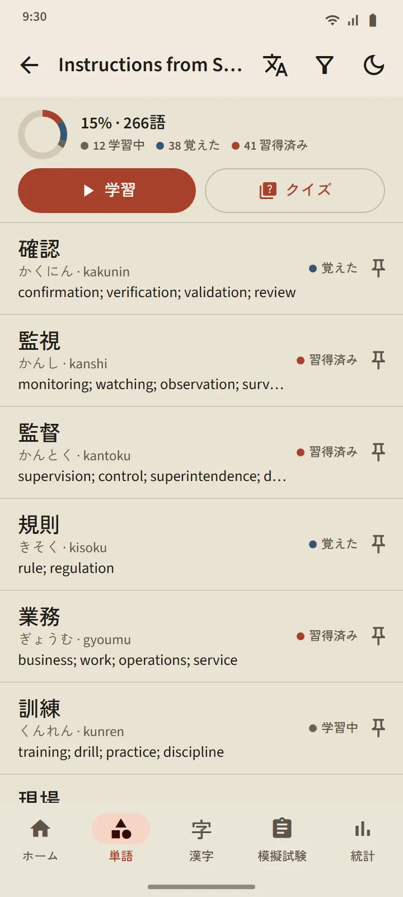

単語
しっかり身につく単語学習
どのカードも、最新の間隔反復アルゴリズム FSRS で復習の時期が決まります。自分で評価すると、アプリがその単語を次にいつ出すかを計算し、次の間隔は各ボタンに表示されます。単語は未学習から学習中、覚えたを経て習得済みへと進み、最後の段階にはクイズでしか上がれません。
- 11 分野・95 トピック。職場分野には、上司の指示、職場の安全、勤務シフトや契約から、工場、建設、農業、飲食店、宿泊、介護まで 21 のトピックがあります。
- デッキごとに 1 画面。達成率、全単語の学習状況、「学習」と「クイズ」のボタン。
- 38,085 語のポケット辞書。漢字、かな、ローマ字、意味で検索できます。
